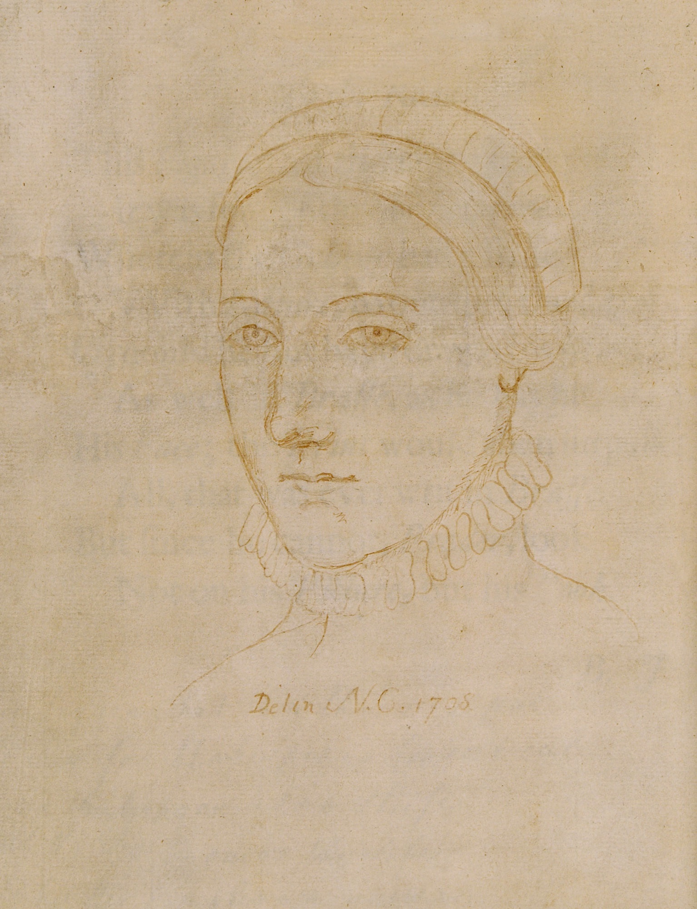

William ShakespeareFrom Wikipedia, the free encyclopedia William Shakespeare[a] (c. 23 April 1564[b] – 23 April 1616)[c] was an English playwright, poet and actor. He is widely regarded as the greatest writer in the English language and the world's pre-eminent dramatist. He is often called England's national poet and the "Bard of Avon" or simply "the Bard". His extant works, including collaborations, consist of some 39 plays, 154 sonnets, three long narrative poems and a few other verses, some of uncertain authorship. His plays have been translated into every major living language and are performed more often than those of any other playwright. Shakespeare remains arguably the most influential writer in the English language, and his works continue to be studied and reinterpreted. Shakespeare was born and raised in Stratford-upon-Avon, Warwickshire. At the age of 18, he married Anne Hathaway, with whom he had three children: Susanna, and twins Hamnet and Judith. Sometime between 1585 and 1592 he began a successful career in London as an actor, writer, and part-owner ("sharer") of a playing company called the Lord Chamberlain's Men, later known as the King's Men after the ascension of King James VI of Scotland to the English throne. At age 49 (around 1613) he appears to have retired to Stratford, where he died three years later. Few records of Shakespeare's private life survive; this has stimulated considerable speculation about such matters as his physical appearance, his sexuality, his religious beliefs and even certain fringe theories as to whether the works attributed to him were written by others. Shakespeare produced most of his known works between 1589 and 1613. His early plays were primarily comedies and histories and are regarded as some of the best works produced in these genres. He then wrote mainly tragedies until 1608, among them Hamlet, Othello, King Lear and Macbeth, all considered to be among the finest works in English. In the last phase of his life he wrote tragicomedies (also known as romances) such as The Winter's Tale and The Tempest, and collaborated with other playwrights. Many of Shakespeare's plays were published in editions of varying quality and accuracy during his lifetime. However, in 1623 John Heminges and Henry Condell, two fellow actors and friends of Shakespeare's, published a more definitive text known as the First Folio, a posthumous collected edition of Shakespeare's dramatic works that includes 36 of his plays. Its preface includes a prescient poem by Ben Jonson, a former rival of Shakespeare, who hailed Shakespeare with the now-famous epithet: "not of an age, but for all time". |

|
Similar authors:
|

Anne Hathaway |

Charles Dickens |

Oscar Wilde |

Miquel de Cervantes |

Edgar Allan Poe |

William Wordsworth |